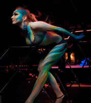
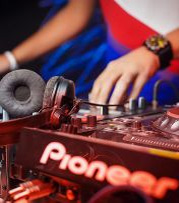
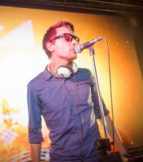
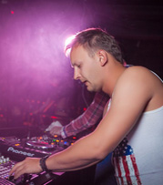

Ночной клуб «Морс» - это танцевально заряженное пространство для ценителей качественного отдыха, современной электронной музыки, кухни и напитков.
Клуб МОРС - это клуб нового формата, отличный от других заведений города Барнаула.
Сочетание притягательной по-настоящему клубной атмосферы с высококлассной музыкой выделяют ночной клуб «Морс» из остального числа подобных ему заведений. Если Вы любите энергичный отдых, то это заведение именно для Вас!
Общая вместимость клуба составляет более четырехсот человек, количество посадочных мест – около трехсот. Ночной клуб «Морс» оборудован профессиональной сценой с самым современным звуковым и световым оборудованием, что позволяет проводить живые концерты и мероприятия самого высокого уровня. Качественный звук способен поразить даже самого искушенного любителя танцевальной музыки. Посетителей и гостей клуба удивит: интерьер, вместительный танцпол, бар с достойным выбором напитков, большой многопиксельный экран с онлайн включениями с танцпола и многое-многое другое. Музыкальный формат клуба отвечает самым современным вкусам.
В клубе действует депозитная система бронирования столов, а так же строгий, но справедливый face control и dress code.
Клуб поразит своим необычным форматом и Вы не будете скучать ни минуты. Клуб хранит в себе много приятных сюрпризов для посетителей, о которых Вы сможете узнать, только посетив его. И будьте уверены, если Вы придете сюда отдыхать, то Вы будете полностью покорены клубом «Морс» и захотите возвращаться сюда снова и снова!
В клубе «Морс» проходят выступления известных ди-джеев, российских и зарубежных звезд. Ночной клуб «Морс» - является одним из самых ведущих и топовых клубов Барнаула.
Ночной клуб «Морс» является идеальным местом для проведения корпоративных мероприятий, банкетов, фуршетов и других праздников. Так же «Морс» предлагает услуги кейтеринга в г.Барнауле.
Режим работы:
пятница, суббота с 22-00 до 06-00
Бронирование столов: ежедневно с 10-00 до 22-00
- 
- 
- 
- 